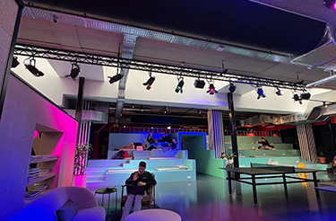
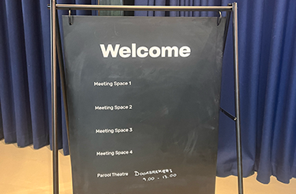
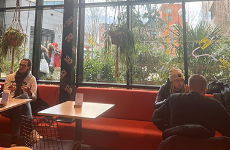

Learn.
Work.
Stay.
Play.
Hotel
If you love trips that feel special, you're in the right spot. The Social Hub isn't just a hotel, it's a friendly place to have fun, work and more. Whether you're on a short city visit or staying longer, The Social Hub is a great choice. In their cool spaces like the lobby, restaurants, and bars, you'll meet all kinds of people. Locals, tourists, students, and business minded people creating their own adventures.
Student Stay
Your all-in-one package: furnished room, private bathroom, work and chill spaces, gym acces, free bike-sharing, laundry and 24-hour security. Conveniently close to universities, The Social Hub is more than student housing, it's a home for study, community and impact.
Extended Stay
Staying at The Social Hub for over two weeks? Great! Enjoy a fully furnished room with your own kitchen or a shared one. Get free access to coworking spaces, a modern gym, shared bikes and exciting events. Plus, you'll get excellent service and special community rates. Whether you're and expat, a worker form abroad or just want a long getaway. The Social Hub has you covered!
Co-work
At THe Social Hub, it's all about connecting people from around the world. With flexible memberships, cool perks, and lots of places to work, it's the perfect spot to start or grouw your business. Join The Social Hub and you'll be part of a global community filled with abitious creative minds, entrepeneurs, and startups making a difference. Work quietly in flexible spaces or brainstorm in their cool meeting rooms.
Meet & Event Spaces
Whether it's a brainstorm over coffee or a big conference, The Social Hub has comfy, flexible, and fully-equipped spaces for anything you have in mind. They believe cool design and staying curious make work more productive, creative, and fun. No matter the meeting or event you're thinking of, they plan to create lasting memories at one of their inspiring locations across Europe.
Eat & Drink
At The Social Hub, they're all about coming together. Whether you're here to eat, drink, collaborate, or celebrate, their laid-back bars and restaurants have you covered. Plenty of options to refuel throughout the day and keep the good times going into the night!
Explore the power of our community